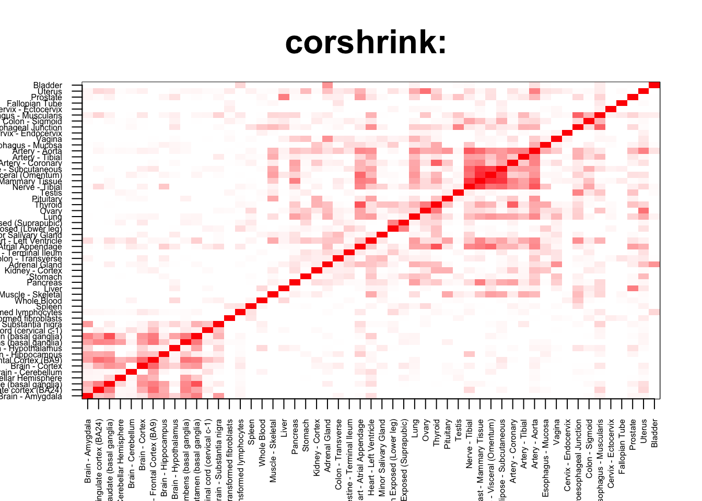
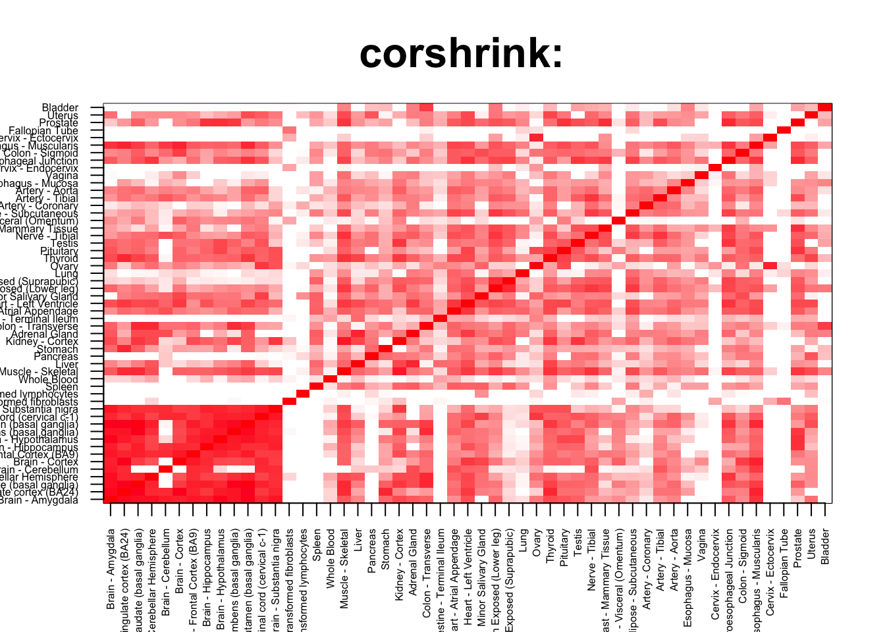

rm(list=ls())
corshrink_data <- get(load("../output/ash_cor_only_voom_pearson_normal_gtex_tissues.rda"))
cor_data <- get(load("../output/cor_tissues_non_ash_voom_pearson.rda"))common_samples <- get(load("../output/common_samples.rda"))
tissue_labels <- read.table(file = "../data/GTEX_V6/samples_id.txt")[,3]
#library(data.table)
#data <- data.frame(fread("../data/GTEX_V6/cis_gene_expression.txt"))
#matdata <- t(data[,-c(1,2)])
gene_names <- as.character(read.table(file = "../data/GTEX_V6/gene_names_GTEX_V6.txt")[,1])
gene_names_1 <- as.character(sapply(gene_names, function(x) return(strsplit(x, "[.]")[[1]][1])))
U <- unique(tissue_labels)tab <- array(0, dim(corshrink_data)[3])
breast_adipose_set <- match(c("Adipose - Subcutaneous", "Adipose - Visceral (Omentum)",
"Breast - Mammary Tissue"), U)
for(m in 1:dim(corshrink_data)[3]){
temp <- corshrink_data[breast_adipose_set, breast_adipose_set, m]
temp1 <- corshrink_data[order_index[-(1:13)], order_index[-(1:13)],m]
tab[m] <- median(temp[row(temp) > col(temp)]) - median(temp1[row(temp1) > col(temp1)])
}
ordering_high <- order(tab, decreasing = TRUE)[1:100]
ordering_low <- order(tab, decreasing = FALSE)[1:100]top_gene <- gene_names_1[ordering_high[1]]
col=c(rev(rgb(seq(1,0,length=1000),1,seq(1,0,length=1000))),
rgb(1,seq(1,0,length=1000),seq(1,0,length=1000)))
image(as.matrix(corshrink_data[order_index,order_index, ordering_high[1]]),
col=col, main=paste0("corshrink: "), cex.main=2,
xaxt = "n", yaxt = "n", zlim=c(-1,1))
axis(1, at = seq(0, 1, length.out = 53), labels = U[order_index], las=2, cex.axis = 0.5)
axis(2, at = seq(0, 1, length.out = 53), labels = U[order_index], las=2, cex.axis = 0.5)
bottom_gene <- gene_names_1[ordering_low[1]]
col=c(rev(rgb(seq(1,0,length=1000),1,seq(1,0,length=1000))),
rgb(1,seq(1,0,length=1000),seq(1,0,length=1000)))
image(as.matrix(corshrink_data[order_index,order_index, ordering_low[1]]),
col=col, main=paste0("corshrink: "), cex.main=2,
xaxt = "n", yaxt = "n", zlim=c(-1,1))
axis(1, at = seq(0, 1, length.out = 53), labels = U[order_index], las=2, cex.axis = 0.5)
axis(2, at = seq(0, 1, length.out = 53), labels = U[order_index], las=2, cex.axis = 0.5)
high_breast_adipose_genes <- gene_names_1[ordering_high]
low_breast_adipose_genes <- gene_names_1[ordering_low]
write.table(cbind.data.frame(high_breast_adipose_genes), quote = FALSE, file = "../utilities/breast_adipose/high_breast_adipose.txt", row.names = FALSE, col.names = FALSE)
write.table(cbind.data.frame(low_breast_adipose_genes), quote = FALSE, file = "../utilities/breast_adipose/low_breast_adipose.txt", row.names = FALSE, col.names = FALSE)tab <- read.delim("../utilities/breast_adipose/pathway_high.tab")
head(cbind.data.frame(tab$pathway, tab$q.value), 10)## tab$pathway
## 1 Triglyceride Biosynthesis
## 2 Fatty acid, triacylglycerol, and ketone body metabolism
## 3 Synthesis of PE
## 4 Fatty Acyl-CoA Biosynthesis
## 5 Transcription factor regulation in adipogenesis
## 6 Pink/Parkin Mediated Mitophagy
## 7 Mitophagy
## 8 Biosynthesis of unsaturated fatty acids - Homo sapiens (human)
## 9 Antigen processing and presentation - Homo sapiens (human)
## 10 Antigen Presentation: Folding, assembly and peptide loading of class I MHC
## tab$q.value
## 1 0.08308783
## 2 0.08308783
## 3 0.09652848
## 4 0.09652848
## 5 0.10054491
## 6 0.10054491
## 7 0.10054491
## 8 0.10054491
## 9 0.10054491
## 10 0.10054491tab <- read.delim("../utilities/breast_adipose/GO_high.tab")
head(cbind.data.frame(tab$term_name, tab$q.value), 10)## tab$term_name tab$q.value
## 1 cellular carbohydrate biosynthetic process 0.01445951
## 2 cellular polysaccharide metabolic process 0.01920296
## 3 vesicle docking 0.01920296
## 4 polysaccharide metabolic process 0.02007949
## 5 cellular polysaccharide biosynthetic process 0.02127896
## 6 membrane docking 0.08672814
## 7 polysaccharide biosynthetic process 0.05677867
## 8 glycogen metabolic process 0.03950204
## 9 cellular glucan metabolic process 0.05677867
## 10 glucan metabolic process 0.05677867tab <- read.delim("../utilities/breast_adipose/pathway_low.tab")
head(cbind.data.frame(tab$pathway, tab$q.value), 10)## tab$pathway
## 1 Photodynamic therapy-induced NF-kB survival signaling
## 2 TNF signaling pathway - Homo sapiens (human)
## 3 Legionellosis - Homo sapiens (human)
## 4 NF-kappa B signaling pathway - Homo sapiens (human)
## 5 Pertussis - Homo sapiens (human)
## 6 Spinal Cord Injury
## 7 Influenza A - Homo sapiens (human)
## 8 VEGFA-VEGFR2 Signaling Pathway
## 9 Validated transcriptional targets of AP1 family members Fra1 and Fra2
## 10 NOD-like receptor signaling pathway - Homo sapiens (human)
## tab$q.value
## 1 3.089291e-10
## 2 3.099683e-09
## 3 4.996518e-09
## 4 9.476139e-09
## 5 4.340398e-08
## 6 5.025804e-08
## 7 8.792439e-08
## 8 9.674219e-08
## 9 2.870150e-07
## 10 7.719807e-07tab <- read.delim("../utilities/breast_adipose/GO_low.tab")
head(cbind.data.frame(tab$term_name, tab$q.value), 10)## tab$term_name tab$q.value
## 1 response to molecule of bacterial origin 8.413515e-14
## 2 response to lipopolysaccharide 4.150473e-13
## 3 response to bacterium 2.158988e-11
## 4 inflammatory response 1.583668e-11
## 5 response to lipid 8.060828e-11
## 6 response to external stimulus 2.245748e-10
## 7 negative regulation of biological process 1.050138e-09
## 8 response to external biotic stimulus 1.242491e-09
## 9 response to other organism 8.154797e-10
## 10 cellular response to molecule of bacterial origin 1.273221e-09This R Markdown site was created with workflowr